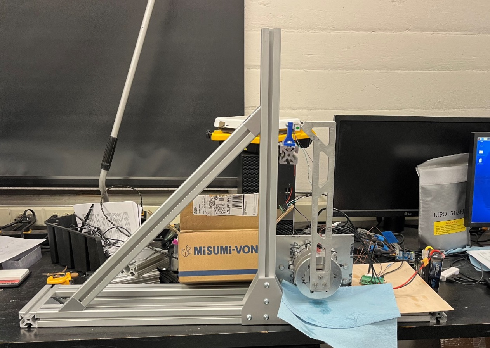
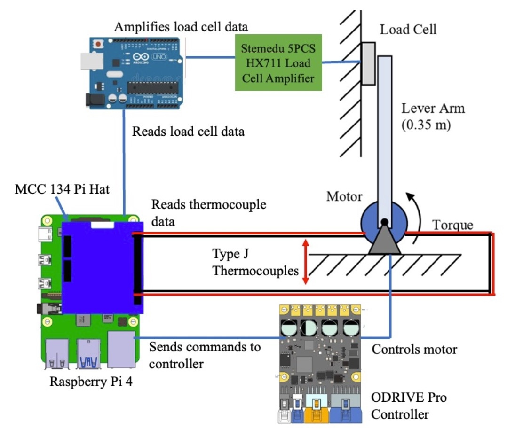
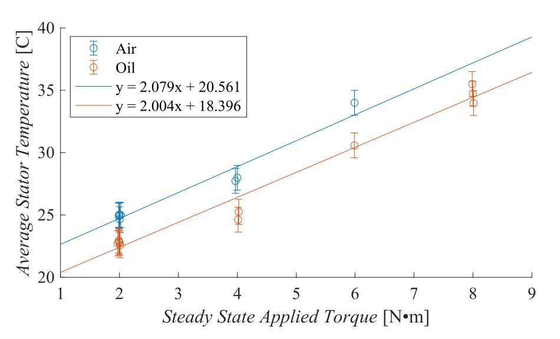
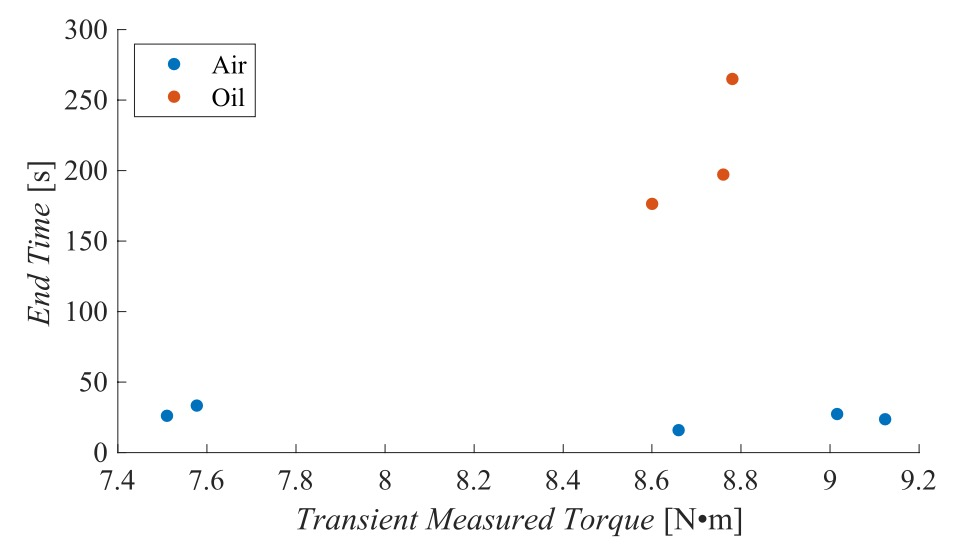

Create a motor gearbox for a quadruped robot that can withstand field conditions without overheating.
A class in Fall 2023 required us to form groups and come up with a project that uses the skills learned from the experiments we conducted throughout the previous year.
The goal of the project was to make a planetary gearbox that was dustproof and cooled passively by mineral oil. My teammate's robotics lab had issues with air-cooled motors overheating in the field, even when it was snowing, so our motor had to limit dust ingress to make sure as much torque as possible goes towards moving the robot (as opposed to overcoming friction caused by dust).
My teammate who was in the robotics lab took on most of the designing and machining of the motor parts. I helped out with the press fit calculations, but my two other teammates and I were more focused on designing the test stand and writing the code for it. Because I made BB-DAQ the previous semester, I was able to use it to handle the load cell data being relayed by the Arduino. Around testing time, we all finalized the data acquisition code and put it on the Raspberry Pi that would be running the files. The finished test stand (along with the motor) is shown below:
| Test Stand | Data Flow |
|---|---|
|  |  |
When we ran the tests, we split the data into two categories depending on the motor module's passive cooling:
For each category, we split the data into two types depending on the outcome:
After each test, we would wait for the thermocouples to return to room temperature before starting the next test.
As soon as we got test data, I began writing MATLAB scripts to deal with the data processing and analysis. Not only did the scripts plot the data categories (dry vs wet) and types (steady-state vs transient), but they could also make GIF files (converted to videos for this page) showing a simplified version of the heat transfer occurring inside the motor module. The data showed that the addition of mineral oil in the motor module resulted in the following:
| Steady-State | Transient |
|---|---|
|  |  |
| Wet: 10 N•m | Dry: 10 N•m |